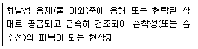
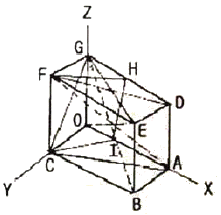

침투비파괴검사기능사 (2010-07-11 기출문제)
1과목: 침투탐상시험법(대략구분)
1. 자분탐상시험 중 시험체를 먼저 잔화시킨 다음 자분을 뿌려 검사하는 방법을 무엇이라 하는가?
- 연속법
- 잔류법
- 습식법
- 건식법
(정답률: 82%)

2. 후유화성 침투탐상시험시 유화제의 적용 시기는?
- 현상시간 경과 직후
- 침투액 적용 직전
- 현상시간 경과 직전
- 침투시간 경과 직후
(정답률: 61%)
3. 자분탐상시험에서 가장 쉽게 발견될 수 잇는 결함은?
- 내부의 균열
- 표면하의 융합부족
- 표면의 미세한 기공
- 표면의 폭이 크고 긴 균열
(정답률: 63%)
4. 자기비료형-내삽 코일을 사용한 관의 와전류탐상시험에서 관의 처음에서 끝까지 동일한 결함이 연속되어 있을 경우 발생되는 신호는 어떻게 되는가?
- 신호가 나타나지 않는다.
- 신호가 단속적으로 나타난다.
- 신호가 주기적으로 나타난다.
- 관의 중간 지점에서만 신호가 나타난다.
(정답률: 77%)
5. 누설검사법 중 압력변화시험에 대한 설명으로 틀린 것은?
- 누설위치를 측정하기에 적합한 시험법이다.
- 압력변화에 따라 누설량을 측정하는 방법이다.
- 일정시간 경과 후 압력변화를 측정하므로 작업시간이 긴 편이다.
- 압력계로 측정이 가능하므로 누설 발생 여부를 알 수 있으며 특별한 추적가스가 필요하지 않다.
(정답률: 27%)
6. 침투탐상시험의 특성에 대한 설명으로 틀린 것은?
- 큰 부품의 일부분씩을 탐상할 수 있는 방법이다.
- 표면의 개구(開口) 결함을 찾는데 효과적인 방법이다.
- 불연속 또는 균열의 깊이를 정확하게 측정할 수 있는 방법이다.
- 침투 물질의 종류나 적용 방법에 따라 민감도가 변할 수 있다.
(정답률: 77%)
7. 시험체를 자르거나 큰 하중을 가하여 재료의 기계적, 물리적 특성을 확인하는 시험 방법은?
- 파괴시험
- 비파괴시험
- 위상분석시험
- 임피던스시험
(정답률: 84%)
8. 누설검사에 이용되는 가압 기체가 아닌 것은?
- 공기
- 황산가스
- 헬륨가스
- 암모니아가스
(정답률: 62%)
9. 초음파탐상시험에서 탐촉자와 시험편 사이에 접촉매질을 사용할 때 시험편의 표면상태가 나쁜 경우 사용하기 가장 어려운 것은?
- 물
- 인공풀
- 녹말풀
- 글리세린
(정답률: 59%)
10. 초음파탐상검사가 방사선투과검사보다 유리한 장점은?
- 기록 보존의 용이성
- 결함의 종류 식별력
- 균열 등 면상결함의 검출능력
- 금속조직 변화의 영향 파악이 용이
(정답률: 54%)
11. 방사선투과시험에서 X선 관전압에 해당되는 동위원소에서의 동일한 투과능력의 대등한 에너지를 무엇이라 하는가?
- 필요 에너지
- 최소 에너지
- 등가 에너지
- 최대 에너지
(정답률: 73%)
12. 내부 기공의 결함 검출에 가장 적합한 비파괴검사법은?
- 음향방출시험
- 방사선투과시험
- 침투탐상시험
- 와전류탐상시험
(정답률: 78%)
13. 비파괴검사의 목적에 대한 설명과 거리가 먼 것은?
- 결함이 존재하지 않는 완벽한 제품을 생산한다.
- 제품의 결함 유무 또는 결함의 정도를 파악, 신뢰성을 향상시킨다.
- 시험결과를 분석, 검토하여 제조 조건을 보완하므로 제조기술을 발전시킬 수 있다.
- 적절한 시기에 불량품을 조기 발견하여 수리 또는 교체를 통해 제조 원가를 절감한다.
(정답률: 68%)
14. 다른 비파괴검사법과 비료했을 때 와전류탐상검사의 장점에 속하지 않는 것은?
- 검사결과의 기록이 용이하다.
- 표면 아래 깊숙한 위치의 결함 검출이 용이하다.
- 비접촉법으로 검사속도가 빠르고 자동화에 적합하다.
- 결함크기 변화, 재질변화 등의 동시 검사가 가능하다.
(정답률: 68%)
15. 침투탐상시험에 대한 설명 중 옳은 것은?
- 현상시간은 침투시간의 약 5배 이상이여야 한다.
- 침투제는 시험체에 적용한 후 반드시 가열하여야 한다.
- 건조기의 온도가 너무 높으면 그 영향으로 침투효과가 저하된다.
- 샌드블라스팀은 침투탐상할 표면을 세척하는데 가장 일반적으로 사용되는 전처리 방법이다.
(정답률: 64%)
16. 침투탐상시험의 침투액에 대한 설명으로 옳은 것은?
- 용제제거성 형광침투액은 수도시설과 전원이 필요없다.
- 용제제거성 염색침투액은 대형부품의 부분 탐상에 적합하다.
- 용제제거성 형광침투액은 대형부품의 전면 동시 검사에 효율적이다.
- 용제제거성 염색침투액은 인화점이 낮으므로 부품의 탐상에 부적합하다.
(정답률: 54%)
17. 다음 결함 중 발생 생성 요인이 다른 것은?
- 텅스텐 흔입
- 고온 균열
- 용입 부족
- 콜드 셧
(정답률: 64%)
18. 형광침투탐상시험의 전처리 과정에서 부품에 묻어 있는 강한 산성 물질을 씻어내지 않았을 경우 주요 원인으로 발생되는 것은?
- 침투시간이 길어진다.
- 침투제의 침투력을 촉진시킨다.
- 얼룩이 오래 동안 남아있게 된다.
- 침투제의 형광성을 감소시켜 결함 식별능력을 잃게 된다.
(정답률: 79%)
19. 수세성 침투탐상시험에서 세척처리시 너무 뜨거운 물로 세척하면 발생되는 주요 문제점은?
- 결함속의 침투액을 유출시킨다.
- 실제 결함보다 너무 크게 확대시킨다.
- 미세한 결함내에 물의 오염을 형성한다.
- 침투액으로부터의 형광성을 발생시킨다.
(정답률: 64%)
20. 침투탐상시험의 적심성(wettability)과 관계가 깊은 접촉각에 대한 설명으로 틀린 것은?
- 표면장력이 큰 수은은 접촉각이 90° 이상이 된다.
- 침투액은 가능한 한 접촉각이 큰 값을 갖도록 만든다.
- 접촉각이 90°이상인 때에는 모세관 내부에서 하향의 힘이 작용된다.
- 액면에 작은 관을 세원을 때 접촉각이 클수록 관내에 올라가는 높이가 낮아진다.
(정답률: 67%)
2과목: 침투탐상관련규격(대략구분)
21. 침투액을 시험 표면에 적용한 후 표면에 있는 불연속부에 침투액이 침투되게 하고, 과잉 침투액을 제거하기 전까지 침투액이 표면에 머무는 시간을 무엇이라 하는가?
- 유지시간(dwell time)
- 배액시간(drain time)
- 흡수시간(absorption time)
- 유화시간(emulsification time)
(정답률: 32%)
22. 침투탐상시험에서 현상제를 사용하는 주 목적은?
- 표면을 건조시키기 위하여
- 침투제의 침투력을 막기 위하여
- 남아 있는 유화제를 흡수하기 위하여
- 결함 내부의 침투제를 흡수하여 잘 보이게 하기 위하여
(정답률: 80%)
23. 다음 중 침투탐상시험에서 부적절한 세척작업으로 인해 가장 검출하기 어려운 불연속은?
- 균열
- 용입불량
- 단조 겹침
- 깊이가 얕은 불연속
(정답률: 41%)
24. 의사지시모양(무관련 혹은 비관련 지시모양)은 현상제를 적용한 면에 어떤 것이 남아있을 경우 나타날 가능성이 가장 높은가?
- 침투액
- 세척액
- 유화액
- 트리클렌
(정답률: 69%)
25. 형광침투탐상시험에서 건식현상제를 사용할 때 형광을 내는 것은?
- 유화제
- 건조제
- 침투액
- 세척액
(정답률: 63%)
26. 항공 우주용 기기의 침투탐상 검사방법(KS W 0914)의 용어 중 다음 설명에 해당하는 것은?

- 건식 현상제
- 비수성 현상제
- 수용성 현상제
- 수현탁성 현상제
(정답률: 31%)
27. 침투탐상 시험방법 및 침투지시모양의 분류(KS B 0816)에서 현상방법의 기호가 N 일 때의 설명으로 옳은 것은?
- 건식현상제를 사용하는 방법이다.
- 습식현상제를 사용하는 방법이다.
- 현상제를 사용하지 않는 방법이다.
- 속건식현상제를 사용하는 방법이다.
(정답률: 79%)
28. 침투탐상 시험방법 및 침투지시모양의 분류(KS B 0816)에서 시험 기록의 작성시 시험장소의 기온 및 침투액의 온도, 기온 및 액온을 기록할 때 다음 중 반드시 적어야 되는 온도에 해당되는 것은?
- 4℃
- 20℃
- 24℃
- 38℃
(정답률: 73%)
29. 침투탐상 시험방법 및 침투지시모양의 분류(KS B 0816)에서 전수검사 후 합격한 부품에 대하여 시험체에 표시를 하는 경우 표시방법에 대한 설명으로 옳은 것은?
- 시험체 주위를 청테이프로 감는다.
- 합격 부위를 흰색 분필로 표시한다.
- 각인, 부식 또는 착색(적갈색)으로 시험체에 P의 기호를 표시한다.
- 시험체에 P의 표시를 하기가 곤란한 경우에는 파란색으로 착색하여 표기한다.
(정답률: 81%)
30. 침투탐상 시험방법 및 침투지시모양의 분류(KS B 0816)에서 스프레이 노즐과 수압 및 유량 조절기구에 대한 내용과 경우에 따라 온수제공 장치나 자외선조사장치를 갖추어야 하는 탐상장치로 옳은 것은?
- 건조장치
- 관찰장치
- 현상장치
- 세척장치
(정답률: 59%)
31. 침투탐상 시험방법 및 침투지시모양의 분류(KS B 0816)에서 잉여 침투액의 제거방법에 따른 분류 기호에 대한 설명이 틀리게 연결된 것은?
- A : 수세에 의한 방법
- B : 기름베이스 유화제를 사용하는 후유화에 의한 방법
- C : 용제 제거에 의한 방법
- D : 속건식 유화제를 사용하는 후유화에 의한 방법
(정답률: 74%)
32. 침투탐상 시험방법 및 침투지시모양의 분류(KS B 0816)에서 기호가 "VC-S" 일 때 C 가 의미하는 것은?
- 현상액
- 용제제거에 의한 방법
- 침투액
- 시험의 건조처리 방법
(정답률: 81%)
33. 배관 용접부의 비파괴시험 방법(KS B 0888)에서 도관의 일반 부분인 경우 침투탐상시험에 대한 지시모양의 분류 및 합격판정 기준으로 옳은 것은?
- 독립침투지시모양은 독립하여 존재하는 개개의 침투 지시모양으로 3종류로 구분한다.
- 연속침투지시모양의 길이는 침투지시모양의 개개의 길이 및 상호의 간격을 더한 값으로 한다.
- 독립침투지시모양 및 연속침투지시모양은 1개의 길이 10mm 이하를 합격으로 한다.
- 분산침투지시모양은 연속된 용접길이 500mm당의 합계점이 10점 이하인 경우를 합격으로 한다.
(정답률: 50%)
34. 항공 우주용 기기의 침투탐상 검사방법(KS W 0914)에서 수성 현상제로 침투지시모양을 관찰할 때 최소 및 최대 현상시간으로 옳은 것은?
- 최소 10분, 최대 1시간
- 최소 10분, 최대 2시간
- 최소 10분, 최대 3시간
- 최소 10분, 최대 4시간
(정답률: 22%)
35. 침투탐상 시험방법 및 침투지시모양의 분류(KS B 0816)에 의한 탐상 시험조작 과정 중 온도에 대한 규제가 특별히 규정되지 않은 것은?
- 침투처리
- 후처리
- 현상처리
- 세척처리
(정답률: 74%)
36. 항공 우주용 기기의 침투탐상 검사방법(KS W 0914)에서 과거에 실시한 청정화, 표면 처리 또는 실제의 사용에 의해 검사의 유효성을 저하시키는 표면상태를 생성하고 있는 징후가 인정되는 경우에 어떤 처리를 하도록 규정하는가?
- 에칭
- 물리적 청정화
- 기계적 청정화
- 용제에 의한 청정화
(정답률: 52%)
37. 항공 우주용 기기의 침투탐상 검사방법(KS W 0914)에 따른 검사에서 합격한 경우 표시 방법의 우선 순위로 옳은 것은?
- 각인＞에칭＞착색＞꼬리표 부착
- 에칭＞각인＞착색＞꼬리표 부착
- 착색＞각인＞에칭＞꼬리표 부착
- 착색＞에칭＞각인＞꼬리표 부착
(정답률: 32%)
38. 침투탐상 시험방법 및 침투지시모양의 분류(KS B 0816)에서 세척처리와 제거처리시 형광침투액을 사용할 경우 수온의 범위로 옳은 것은?
- 5~20℃
- 5~25℃
- 10~40℃
- 20~50℃
(정답률: 75%)
39. 침투탐상 시험방법 및 침투지시모양의 분류(KS B 0816)에서 기름베이스 유화제를 사용하는 형광침투탐상의 경우 최대 유화시간으로 옳은 것은?
- 1분
- 2분
- 3분
- 7분
(정답률: 53%)
40. 침투탐상 시험방법 및 침투지시모양의 분류(KS B 0816)에서 시험체 재질이 플라스틱이고, 결함의 종류가 갈라짐이라면 현상온도가 15~50℃ 범위일 때 규정된 침투처리 후 표준 현상시간은?
- 5분
- 7분
- 10분
- 15분
(정답률: 66%)
3과목: 금속재료일반 및 용접일반(대략구분)
41. 운영체제에서 RR(Round Robin)방식의 스케줄링에 대한 설명으로 옳은 것은?
- 시분할 방식으로 사용자들에게 프로세서를 할당하는 방법이다.
- 사건 중심으로 자원을 공유하는 방식이다.
- 정상적인 프로그램을 일시적으로 중지하는 것이다.
- 원시프로그램을 목적프로그램으로 변환한다.
(정답률: 42%)
42. 다른 곳에서 위치한 컴퓨터에 원격으로 접속하여 자신의 컴퓨터처럼 사용할 수 있도록 하는 것은?
- FTP
- TELNET
- USENET
- ARCHIE
(정답률: 23%)
43. 인터넷 상에서 해커가 공격하는 기법과 거리가 먼 것은?
- 가로 채기
- 흐름 차단
- 백신 복구
- 서비스 거부
(정답률: 66%)
44. WWW(World Wide Web)에 관련된 용어 설명으로 틀린 것은?
- Brovser는 WWW에서 제공되는 정보를 볼 수 있도록 해주는 프로그램을 말한다.
- HTML은 WWW에서 사용하는 데이터 전송 프로토콜이다.
- URL은 웹서비스에 제공되는 여러 가지 자원들에 대한 주소를 의미한다.
- CGI는 웹 서버와 외부 프로그램과의 표준 인터페이스이다.
(정답률: 28%)
45. 사용자 허락 없이 내부 네트워크에 접근하는 행위를 차단하는 소프트웨어나 하드웨어를 모두 가리키는 것은?
- FTP
- HTTP
- Fire Wall
- VACCINE
(정답률: 34%)
46. 다음 중 Fe-C평형 상태도에서 나타날 수 없는 반응은?
- 공정 반응
- 포정 반응
- 공석 반응
- 편정 반응
(정답률: 55%)
47. 철강을 A1변태점 이하의 일정 온도로 가열하여 인성을 증가시킬 목적으로 하는 조작을 무엇이라 하는가?
- 풀림
- 뜨임
- 담금질
- 노멀라이징
(정답률: 49%)
48. 구리를 용해할 때 흡수한 산소를 인으로 탈산시켜 산소를 0.01%이하로 남기고 인을 0.02%로 조절한 구리는?
- 전기 구리
- 탈산 구리
- 무산소 구리
- 전해 인성 구리
(정답률: 65%)
49. 다음 중 도금층이나 질화층 등과 같이 얇은 층의 경도 측정에 적합한 경도기는?
- 비커즈 경도기
- 브리넬 경도기
- 로크웰 경도기
- 쇼어 경도기
(정답률: 39%)
50. 다음 중 공업적으로 생산되는 순철이 아닌 것은?
- 연철
- 전해철
- 경화철
- 앙코철
(정답률: 23%)
51. 다음 중 불변강이 아닌 것은?
- 코엘린바
- 스텔라이트
- 슈퍼인바
- 플래티나이트
(정답률: 50%)
52. 다음 중 주철의 성장 원인이라 볼 수 없는 것은?
- Si의 산화에 의한 팽창
- 시멘타이트의 흑연화에 의한 팽창
- A4변태에서 무게 변화에 의한 팽창
- 불균일한 가열로 생기는 균열에 의한 팽창
(정답률: 52%)
53. 비정질 합금의 제조법 중에서 기체 급랭법에 해당되지 않는 것은?
- 진공 증착법
- 스퍼터링법
- 화학 증착법
- 스프레이법
(정답률: 43%)
54. 황(S)이 적은 선철을 용해하여 주입 전에 Mg, Ce, Ca등을 첨가하여 제조한 주철은?
- 펄라이트주철
- 구상흑연주철
- 가단주철
- 강력주철
(정답률: 66%)
55. 다음 중 Y-합금은 어느 합금에 해당되는가?
- 내열용 알루미늄합금
- 열전대용 백금합금
- 히터용 크롬합금
- 내열용 티탄합금
(정답률: 77%)
56. 도면과 같은 금속결정 중의 원자면에서 (100)면을 나타내는 면은?

- (ACFD)
- (ACGD)
- (ABED)
- (FHIC)
(정답률: 50%)
57. 특정온도 이상으로 가열하면 변형되기 이전의 원래상태로 되돌아가는 현상을 이용하여 만든 신소재는?
- 형상기억합금
- 제진합금
- 비정질합금
- 초전도합금
(정답률: 88%)
58. 아크 용접에서 아크쏠림 방지대책으로 틀린 것은?
- 접지점을 될 수 있는 대로 용접부에서 멀리 할 것
- 용접부가 긴 경우에는 전진법을 사용할 것
- 직류용접으로 하지 말고 교류용접으로 할 것
- 짧은 아크를 사용할 것
(정답률: 37%)
59. 핫스타트(Hot Start)장치의 사용 이점이 아닌 것은?
- 아크 발생을 쉽게 한다.
- 비드 모양을 개선한다.
- 기공(blow hole)을 촉진한다.
- 아크발생 초기 비드용입을 양호하게 한다.
(정답률: 62%)
60. 아세틸렌 발생에 이용되는 카바이드의 화학식으로 맞는 것은?
- CaO
- CaC2
- Ca(OH)2
- C2H2
(정답률: 35%)